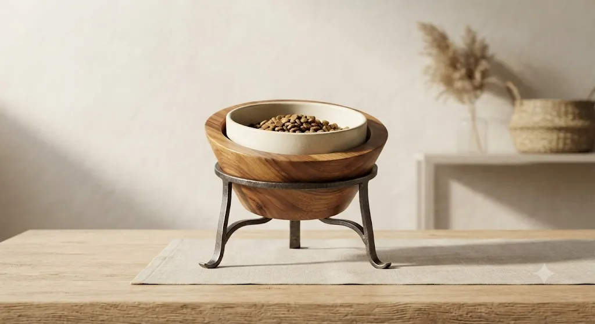

AA-PT-172 · Cat 18
Mid-Century Raised Cat Food Stand (Single)
Handcrafted Cat Wellness handcrafted export piece engineered for Amazon Prime, Chewy wholesale programs.
$4.50 – $5.80 FOB Mundra · per unit · MOQ 100 Pcs
| Material & construction | Turned hardwood bowl stand angled at 15 degrees for feline cervical neck comfort |
|---|---|
| Dimensions | Dia 7" x 5" H / Dia 18 x 13 cm |
| Carton volume | 0.004 CBM / unit |
| Minimum order | 100 Pcs |
| Lead time | 45–60 Days (FOB Mundra) |
| Western retail benchmark | $24 – $32 |
| Style | Cat Wellness |
| Indicative HS heading | 4420.90 — Wooden boxes, cases & ornaments |
| Typical buyers | Amazon Prime, Chewy |
Indicative HS heading only — your customs broker confirms final classification. Kiln-dried 8–10% moisture, ISPM-15 dunnage, VRIKSH / Lacey / EUDR paperwork on request.